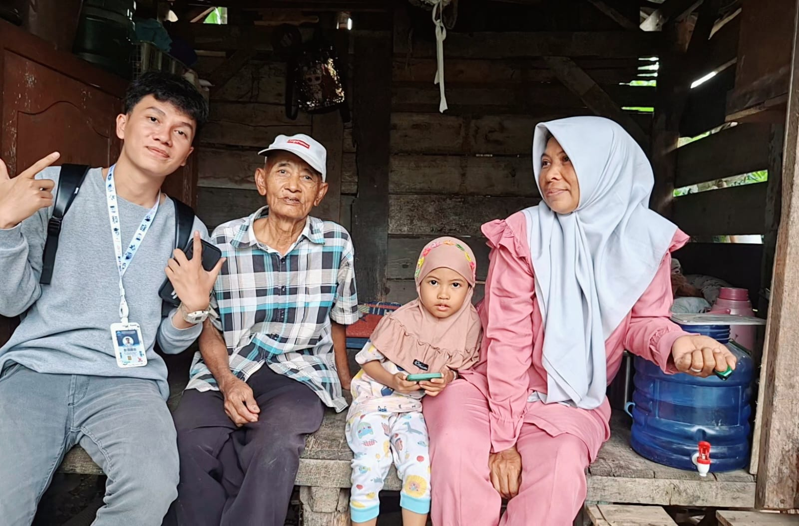
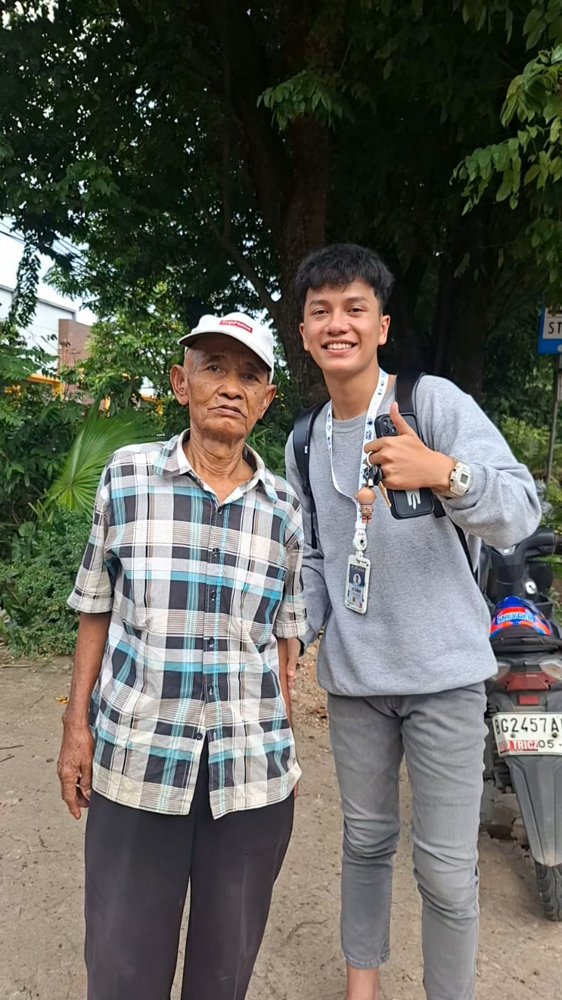
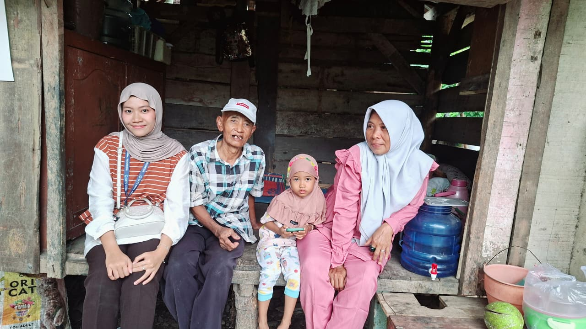
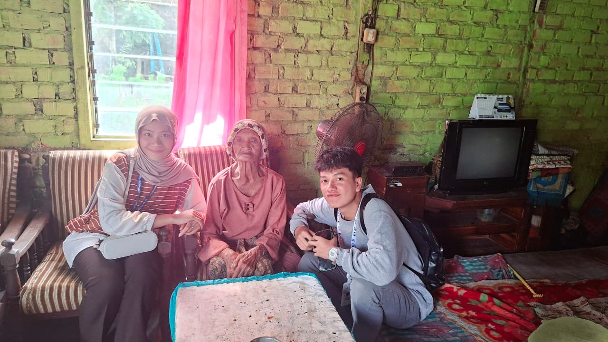
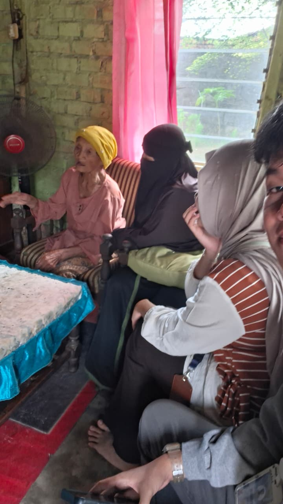

payd & sipa
Cerita Unik
Hasil asesment lansia Fahrid dan Syarifah terima kasih sudah mampir selamat membaca.
28 Januari 2026

Galeri kek Sumbali


28 Januari 2026

Galeri Mbah Parijem

Dukungan & Donasi

Scan QRIS via Mobile Banking / E-Wallet
klik untuk zoom
Salurkan Kebaikan
Dukungan Anda sangat berarti untuk membantu keberlangsungan hidup banyak orang seperti Kakek Sumbali dan Mbah Parijem. Seluruh donasi akan disalurkan langsung melalui Satu Amal Indonesia.
Bank Transfer (MANDIRI)
112.00.1631.3590
Satu Amal Indonesia
Bank Transfer (BNI)
3457474561
Satu Amal Indonesia
Bank Transfer (BRI)
227.801.000088.308
Satu Amal Indonesia
Bank Transfer (BSI)
123.7474.566
Satu Amal Indonesia
Nomor Rekening Berhasil Disalin!
Konfirmasi Pembayaran